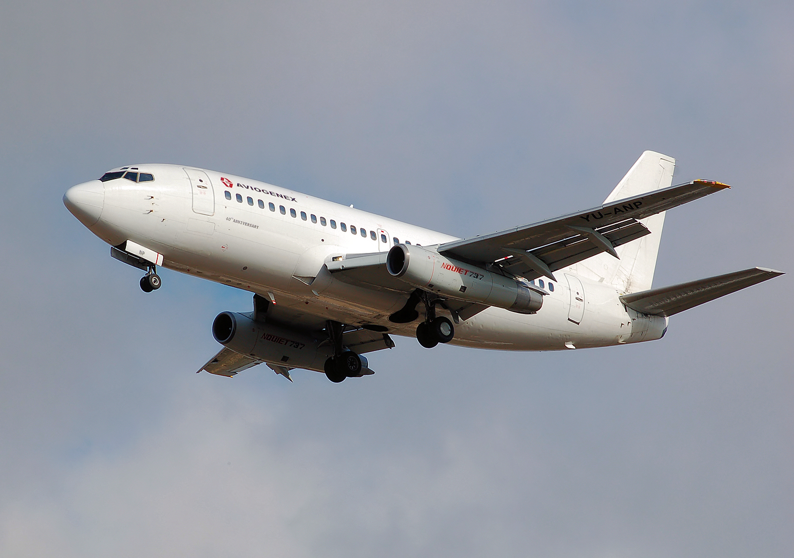

| First Flight: | |
| Entry Into Service: | |
| Length: | |
| Wingspan: | |
| Height: | |
| Capacity: | |
| Range: | |
| Cruse Speed: | |
| Max Speed: | |
| Service Ceiling: | |
| Engines: | |
| Max Takeoff Weight: | |
| Number Built: |
Introduction
The Boeing 737 is a narrow-body passenger aircraft developed by Boeing and first flown in 1967. Designed for short- and medium-haul flights, it quickly became popular with airlines due to its reliability, efficiency, and versatility. Since entering commercial service in 1968, the aircraft has been used by airlines all around the world and has carried billions of passengers.
Over the decades, the Boeing 737 has evolved through several generations, including the Original, Classic, Next Generation (NG), and MAX series. Each new generation introduced improvements in technology, fuel efficiency, performance, and passenger comfort. These upgrades have allowed the aircraft to remain competitive and meet the changing needs of the aviation industry.
Today, the Boeing 737 is one of the most successful commercial aircraft families ever produced. Thousands of aircraft are currently in service, operating on routes ranging from short domestic flights to longer international journeys. Its widespread use and long history have made the Boeing 737 an important part of modern air travel and one of the most recognizable aircraft in the world.
History
-
1964Development Begins
In the early 1960s, Boeing recognized a growing demand for a smaller jet airliner that could serve short- and medium-haul routes. Airlines were looking for an aircraft that was efficient, economical, and capable of operating from a wide range of airports. In response, Boeing began developing what would become the Boeing 737.
The project was designed to complement Boeing's larger aircraft while providing airlines with a versatile option for regional and domestic travel. Engineers focused on creating a simple and reliable design, establishing the foundation for an aircraft family that would remain in production for decades.
-
1967First Flight
On April 9, 1967, the Boeing 737 completed its maiden flight. This important milestone marked the first time the aircraft took to the skies and allowed Boeing to begin a series of flight tests to evaluate its performance, handling, and safety.
The successful first flight demonstrated that the new aircraft met expectations and was ready to move closer toward commercial service. It also marked the beginning of a journey that would eventually make the 737 one of the most recognizable and widely used airliners in the world.
-
1968Entry Into Commercial Service
The Boeing 737 entered commercial service on February 10, 1968, with the German airline Lufthansa. This marked the start of the aircraft's operational career and introduced passengers to a new generation of short- and medium-range jet travel.
Airlines quickly appreciated the aircraft's reliability, efficiency, and ease of operation. As more carriers added the 737 to their fleets, its popularity continued to grow, helping establish it as a key part of the global aviation industry.
-
1984Introduction of the 737 Classic
The introduction of the 737 Classic series represented one of the most significant upgrades in the aircraft's history. The new generation included the 737-300, 737-400, and 737-500 variants, all equipped with more efficient CFM56 engines and improved systems.
These improvements reduced fuel consumption and noise levels while increasing performance. The Classic series proved highly successful and allowed the Boeing 737 to remain competitive as airlines demanded more advanced and economical aircraft.
-
1997Introduction of the Next Generation
The Boeing 737 Next Generation, often called the NG series, entered service in 1997. This generation introduced redesigned wings, upgraded avionics, greater fuel capacity, and improved passenger comfort, making it a major advancement over previous models.
The NG series significantly increased the aircraft's range and efficiency, allowing airlines to operate longer routes while carrying more passengers. Its success helped cement the Boeing 737's position as one of the world's leading commercial aircraft families.
-
2017Entry of the 737 MAX
The Boeing 737 MAX entered commercial service in 2017 as the latest evolution of the 737 family. Designed to improve fuel efficiency and reduce operating costs, it featured advanced CFM LEAP-1B engines and several aerodynamic improvements.
The new generation was developed to meet the growing demand for more environmentally friendly and cost-effective aircraft. Airlines around the world quickly adopted the MAX as a modern replacement for older aircraft within their fleets.
-
2020Return to Service
Following a worldwide grounding, the Boeing 737 MAX underwent extensive testing, software updates, and regulatory reviews. Aviation authorities worked closely with Boeing to evaluate changes made to the aircraft and ensure that all safety requirements were met.
In late 2020, regulators approved the aircraft's return to service after the necessary modifications had been completed. This marked an important turning point in the history of the 737 program and allowed airlines to gradually reintroduce the aircraft into commercial operations.
Generations
Original Series
(737-100 / 737-200)

The Boeing 737 Original series marked the beginning of what would become one of the most successful aircraft families in aviation history. Developed during the 1960s, the series consisted of the 737-100 and the slightly larger 737-200. The aircraft was designed for short- and medium-haul routes, offering airlines a reliable and efficient option for domestic and regional travel. Boeing offered an "unpaved surface kit" for the original series which allowed aircraft to operate from grass and dirt strips.
The first Boeing 737 completed its maiden flight in 1967 and entered commercial service in 1968. Although production of the Original series eventually ended, its success demonstrated the aircraft's potential and laid the foundation for future generations of the 737, which would continue to evolve for decades.
Next Generation
(737-600 / 737-700 / 737-800 / 737-900)

The Boeing 737 Next Generation, often referred to as the NG series, was introduced in the late 1990s. This generation brought significant improvements, including redesigned wings, greater fuel capacity, upgraded avionics, and a more modern flight deck. These enhancements allowed the aircraft to fly longer routes while improving overall efficiency.
Among the NG variants, the 737-800 became especially popular and remains one of the most widely used commercial aircraft in the world. The success of the NG series helped strengthen the Boeing 737's reputation and ensured its continued dominance in the narrow-body aircraft market.
Classic Series
(737-300 / 737-400 / 737-500)

Introduced in the 1980s, the Boeing 737 Classic series represented a major step forward in performance and technology. The series included the 737-300, 737-400, and 737-500 models, all of which featured more powerful and fuel-efficient CFM56 engines. These improvements helped reduce operating costs while also lowering noise levels compared to earlier variants.
The Classic series quickly became popular with airlines around the world and played an important role in maintaining the Boeing 737's position in the commercial aviation market. Its combination of reliability, efficiency, and flexibility made it one of the most successful aircraft families of its era.
737 MAX Series
(MAX 7 / MAX 8 / MAX 9 / MAX 10)

The Boeing 737 MAX is the newest generation of the 737 family and entered commercial service in 2017. Designed to improve fuel efficiency and reduce operating costs, the MAX features advanced CFM LEAP-1B engines, aerodynamic refinements, and updated technology. The series includes four variants: the MAX 7, MAX 8, MAX 9, and MAX 10. As of this websites making only the MAX 8 and MAX 9 are certified for passenger opperations.
Despite facing significant challenges early in its service life, the 737 MAX underwent extensive redesigns, testing, and certification processes. Today, it continues to serve airlines around the world and represents Boeing's latest effort to modernize the long-running 737 platform while meeting the demands of modern air travel.